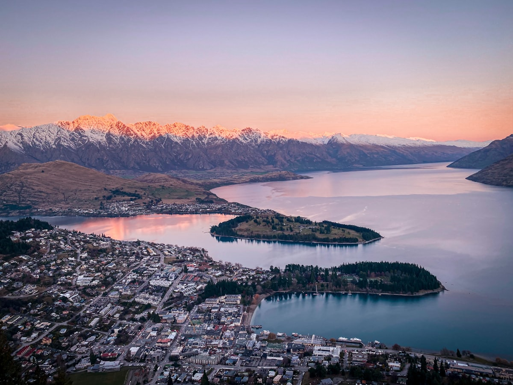
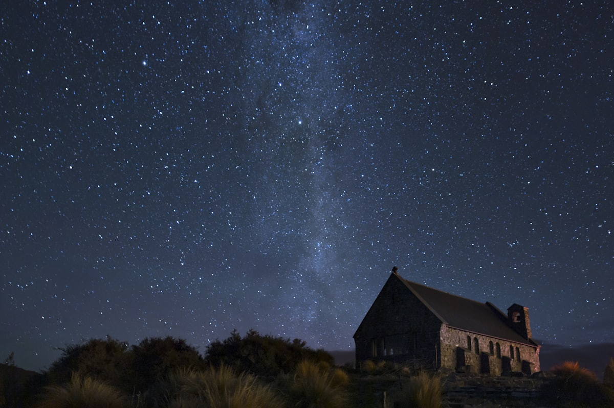
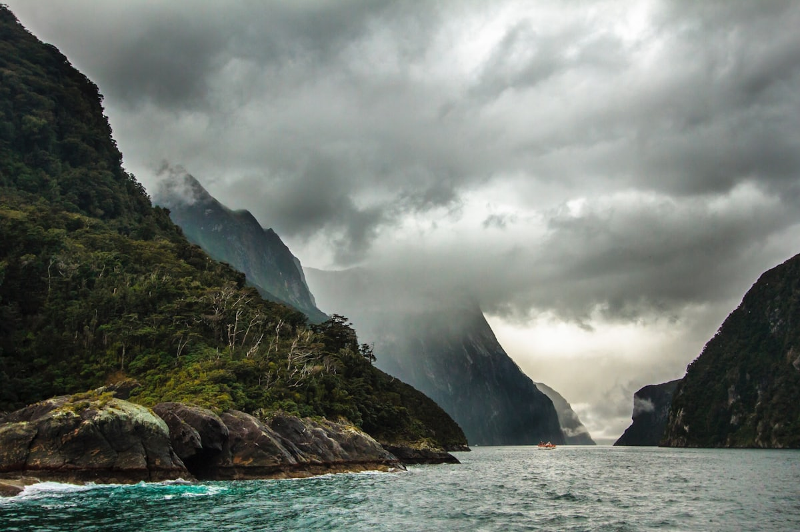
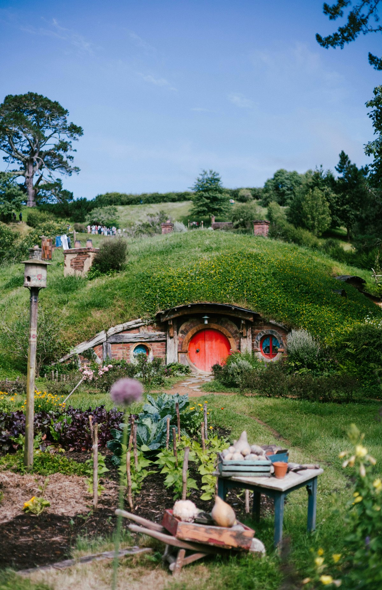
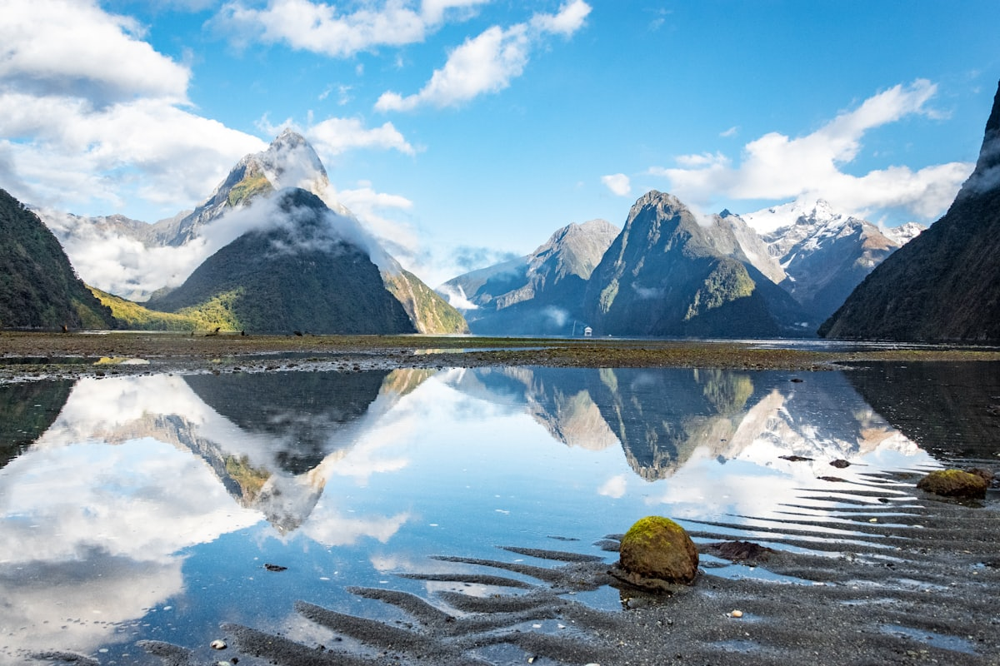
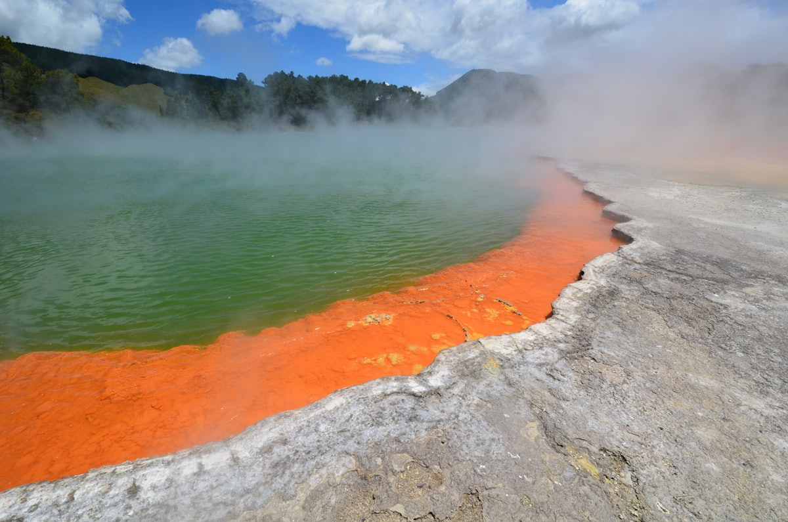
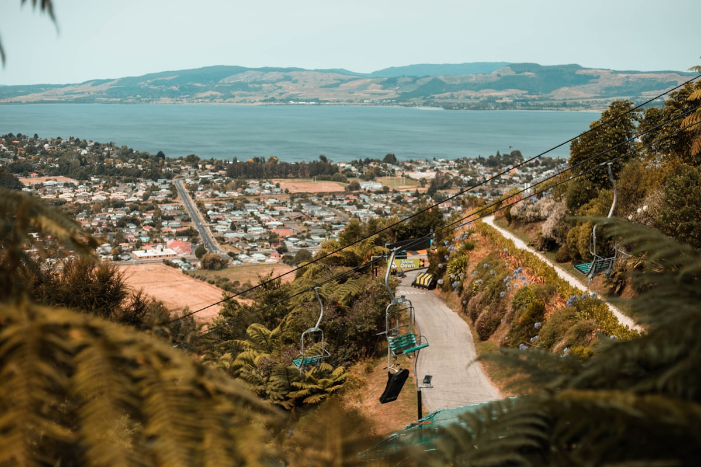
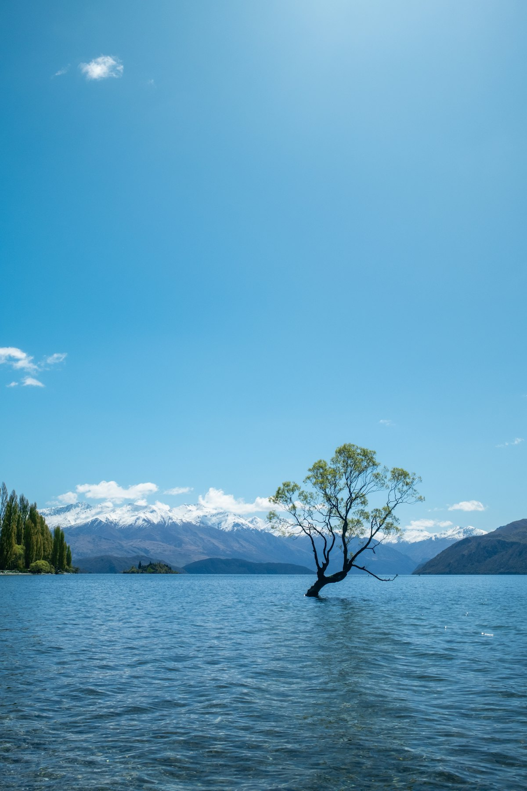

| 事项 | 结论 |
|---|---|
| 事项 | 结论 |
| 签证（最关键） | 中国护照需提前申请访客签证（Visitor Visa），在线申请、NZD441 起（含 NZD100 IVL 旅游税），官方 80% 两周内出结果，建议提前 1–2 个月申请 |
| 推荐方案 | 北岛 5 天（奥克兰→罗托鲁瓦）+ 南岛 13 天自驾 + 返程 2 天；南岛为全程精华 |
| 时差与季节 | 新西兰比北京快 4 小时（标准）/ 5 小时（10–3 月夏令时）；12–2 月为夏季旺季，天气最稳 |
| 电源 | 电压 230V，I 型三脚插座（同国内澳标三角），需带转换插头 |
| 货币与汇率 | 新西兰元 NZD；1 元人民币 ≈ 0.22 NZD，NZD 100 ≈ 455 元；现金需求低，Visa/Master 全境可刷 |
| 自驾注意 | 中国驾照可凭翻译件租车，靠左行驶；冬季高山段须备雪链，皇后镇—米尔福德山路弯多 |
| 预算（人均） | 经济 20000–30000 ／ 标准 38000–55000 ／ 舒适 80000–120000（人民币） |
以下为 20 天 19 晚的推荐节奏：北岛环游 5 天（奥克兰进出），飞基督城后开启 12 天南岛自驾大环线。每日主景点 ≤2 个，自驾里程控制在 3 小时内。
| 日期 | 行程 | 过夜地 | 主题 |
|---|---|---|---|
| D1 抵奥克兰 | 北京✈奥克兰（直飞约 12.5h），入住市区，倒时差，傍晚天空塔看日落 | 奥克兰 | 抵达+预热 |
| D2 | 伊甸山火山口 → 使命湾 → 奥克兰战争纪念博物馆 或 皇后街购物 | 奥克兰 | 千帆之都 |
| D3 | 霍比特人村（2.5h 导览）→ 罗托鲁瓦，晚餐毛利美食 | 罗托鲁瓦 | 中土世界 |
| D4 | 怀奥塔普地热公园（香槟池）→ 蒂普亚毛利文化村（毛利战舞+地热间歇泉） | 罗托鲁瓦 | 地热+毛利 |
| D5 | 爱歌顿农场剪羊毛秀 → 罗托鲁瓦湖，午后飞基督城（约 1.5h） | 基督城 | 北岛收尾 |
| D6 | 基督城取车 → 阿什伯顿补给 → 特卡波湖，傍晚好牧人教堂 + 湖畔日落 | 特卡波湖 | 星空前奏 |
| D7 | 特卡波湖：约翰山天文台步道/牧羊犬雕像 → 晚上观星团（预留第 2 晚补观） | 特卡波湖 | 暗夜观星 |
| D8 | 特卡波 → 库克山：胡克谷步道（3h，冰湖+雪山），宿库克山村或返回特卡波 | 库克山 | 冰川徒步 |
| D9 | 塔斯曼冰川步道（游船可选）→ 普卡基湖蓝色牛奶湖 → 瓦纳卡 | 瓦纳卡 | 冰川+蓝湖 |
| D10 | 瓦纳卡：孤树打卡 → 罗伊峰步道（半日徒步）或 迷幻世界 | 瓦纳卡 | 湖畔休闲 |
| D11 | 瓦纳卡 → 皇冠山脉 → 皇后镇，傍晚湖边散步 | 皇后镇 | 抵达皇后镇 |
| D12 | 天空缆车上鲍勃峰 → Luge 滑车 → 山顶午餐，俯瞰瓦卡蒂普湖 | 皇后镇 | 冒险之城 |
| D13 | 格莱诺基 + 天堂镇（指环王取景地），湖边野餐半日 | 皇后镇 | 魔戒之路 |
| D14 | 皇后镇自由日：蹦极/喷射快艇/滑翔伞 三选一，下午箭镇淘金小镇 | 皇后镇 | 极限活动 |
| D15 | 米尔福德峡湾一日游（巴士+游船，瀑布与海豹），返皇后镇或宿蒂阿瑙 | 皇后镇 | 峡湾游船 |
| D16 | 皇后镇 → 但尼丁（沿海岸线），傍晚八角广场 + 老火车站 | 但尼丁 | 维多利亚城 |
| D17 | 奥塔哥半岛：拉纳克城堡 → 信天翁中心 → 小蓝企鹅归巢（晚上） | 但尼丁 | 野生动物日 |
| D18 | 鲍德温街（世界最陡街）→ 但尼丁第一教堂 → 下午飞奥克兰 | 奥克兰 | 回北岛 |
| D19 | 奥克兰自由日：怀特玛塔港帆船出海 或 德文波特半岛 | 奥克兰 | 千帆之都 |
| D20 返程 | 奥克兰✈北京（直飞约 12.5h），到家休整 | — | 收尾 |
以下为 20 天全程的逐小时执行时间线，可当作「当天打开照着走」的清单。标注 ※ 的可选项视体力与天气取舍。
| 时间 | 事项 |
|---|---|
| 12:00–13:00 | 北京✈奥克兰（国航 CA783 直飞约 12.5h，夜航跨日抵达），机场过海关约 30–60 分钟 |
| 13:30–15:00 | 机场大巴/SkyBus 进市区（约 1h，单程约 NZD 21），或 Uber 约 NZD 60 |
| 15:30–17:30 | 入住市区酒店（推荐皇后街/海滨一带），先换汇+买 2 天 Hop-on Hop-off 观光车票 |
| 18:00–20:30 | 天空塔（登塔约 NZD 46）：328 米俯瞰奥克兰全景与双港湾日落，晚餐塔下皇后街餐厅 |
| 21:00 | 回酒店休息，倒时差（时差 +4~+5h，前两天建议早睡） |
| 时间 | 事项 |
|---|---|
| 08:30–10:30 | 伊甸山 Mount Eden（免费）：死火山口盆地，360° 俯瞰奥克兰双海湾，风大注意防风 |
| 11:00–13:00 | 使命湾 Mission Bay（免费）：火山岩黑沙滩 + 海滨步道，海边咖啡馆午餐 |
| 13:30–15:30 | 奥克兰战争纪念博物馆（成人约 NZD 35）：毛利文化大厅 + 太平洋岛民馆，绝对值得 |
| 16:00–18:00 | 皇后街购物 + 码头区，看帆船游艇码头（美洲杯基地） |
| 18:30–20:30 | 晚餐：码头海鲜餐厅或天空塔旋转餐厅（Stratosfare 午市性价比高） |
| 时间 | 事项 |
|---|---|
| 08:00 | 奥克兰出发自驾/参团前往玛塔玛塔（约 2h），或乘 InterCity 巴士 |
| 10:30–13:00 | 霍比特人村 Hobbiton（Signature Tour 成人 NZD 130）：绿龙酒馆、袋底洞、磨坊与湖畔，含饮品 |
| 13:00–14:00 | 园内午餐或玛塔玛塔小镇 café |
| 14:30–17:30 | 继续南行至罗托鲁瓦（约 1.5h），途经剑桥小镇喝咖啡，入住罗托鲁瓦温泉酒店 |
| 18:00–20:30 | 晚餐：毛利特色鹿肉/岩烤餐，或湖边餐厅；酒店泡地热泳池解乏 |
| 时间 | 事项 |
|---|---|
| 08:30–11:00 | 怀奥塔普地热公园 Wai-O-Tapu（成人约 NZD 42）：香槟池、艺术家调色板、间歇泉，全程 1.5–2h |
| 11:30–12:30 | 午餐：罗托鲁瓦湖畔 fish & chips 或韩餐 |
| 13:00–16:00 | 蒂普亚 Te Puia 毛利文化村（成人约 NZD 65）：Pōhutu 间歇泉每小时喷发 + 毛利战舞 Haka + 工艺雕刻学校 |
| 16:30–18:00 | 湖边散步：市政花园英式花园、湖边黑天鹅；爱歌顿农场剪羊毛秀（若时间够） |
| 18:30–20:30 | 晚餐：毛利 Hāngi 地炉晚宴（可选，需预约）或中餐 |
| 时间 | 事项 |
|---|---|
| 08:30–11:00 | 爱歌顿农场 Agrodome（成人约 NZD 50）：剪羊毛秀 + 牛羊驼牧场，喂食活动适合全家 |
| 11:00–12:00 | 罗托鲁瓦湖快速巡游（可选）或湖畔午餐 |
| 13:00–15:00 | 罗托鲁瓦✈基督城（奥克兰中转，全程约 3h，提前订约 600–900 元） |
| 15:30–17:30 | 入住基督城，大教堂广场 + 纸板教堂（免费）：震后重建城市，Avon 河泛舟可选 |
| 18:00–20:00 | 晚餐：基督城 New Regent Street 彩色街区，或河畔市场 |
| 时间 | 事项 |
|---|---|
| 09:00–10:30 | 基督城取车（推荐 Apex/JUCY，全险），正式开启南岛自驾 |
| 10:30–12:30 | 基督城 → 阿什伯顿（补给加油站+超市）→ 费尔利，沿途坎特伯雷平原农场风光 |
| 13:00–15:00 | 抵达特卡波湖 Lake Tekapo，湖景午餐；下午湖边漫步，鲁冰花季（11–1 月）湖畔花海 |
| 16:00–18:00 | 好牧人教堂（免费外观）：湖畔石教堂经典机位，傍晚光线最佳 |
| 18:30–21:00 | 晚餐：日式 Kohan 餐厅（湖畔人气）或镇内咖啡馆；饭后观星踩点 |
| 时间 | 事项 |
|---|---|
| 09:00–11:00 | 约翰山天文台步道（Mt John Walkway，免费）：1.5h 徒步俯瞰特卡波湖蓝绿色湖水 |
| 11:30–13:00 | 湖畔午餐，下午自由：湖畔咖啡馆发呆 / 羊驼农场 / 直升机观光（可选） |
| 15:00–17:00 | 休息储备体力（观星在深夜） |
| 19:30–20:30 | 晚餐后前往 Dark Sky Project 报到（镇中心） |
| 21:00–23:00 | 观星团（Summit 约 NZD 219 / Crater 约 NZD 139）：南十字星、麦哲伦星云、天蝎座银河，天文望远镜+中文讲解可选 |
| 时间 | 事项 |
|---|---|
| 08:30 | 特卡波 → 库克山村（约 1.5h，途经普卡基湖牛奶蓝湖，必停拍照） |
| 10:00–13:00 | 胡克谷步道 Hooker Valley Track（免费，往返 3h）：吊桥三连 + 胡克冰川湖，终点雪山倒影 |
| 13:00–14:00 | 库克山村 The Old Mountaineers Café 午餐（鹿肉汉堡） |
| 14:30–16:30 | 塔斯曼冰川观景台（Blue Lakes 步道 1h）或直升机冰川降落（可选，约 NZD 450） |
| 17:00 | 入住库克山村或返回特卡波，晚餐，夜晚继续观星补光 |
| 时间 | 事项 |
|---|---|
| 08:30–11:00 | 塔斯曼冰川步道（1h 往返，观冰湖浮冰）；可选冰川船游 Glacier Explorers（约 NZD 169） |
| 11:30–12:30 | 库克山 → 特威泽尔小镇午餐（高原三文鱼农场值得去） |
| 13:00–15:30 | 特威泽尔 → 林迪斯山口 → 瓦纳卡 Wanaka（约 2h，山谷湖泊景观公路） |
| 16:00–18:00 | 孤树 That Wanaka Tree（免费）：湖中孤柳，日落机位；瓦纳卡湖边步道 |
| 18:30–20:00 | 晚餐：瓦纳卡镇中心餐厅（湖边牛排馆人气高） |
| 时间 | 事项 |
|---|---|
| 08:00–12:30 | 罗伊峰步道 Roy's Peak（免费，往返 5–6h，16km）：悬崖观景台俯瞰瓦纳卡湖，早出发避开烈晒 |
| 12:30–14:00 | 徒步下山，镇上午餐 |
| 14:30–17:00 | 迷幻世界 Puzzling World（成人约 NZD 27）：倾斜屋 + 迷宫花园，适合轻松下午 |
| 17:30–19:00 | 瓦纳卡湖西岸日落 / 涌泉溪（喷泉）散步 |
| 19:00 | 晚餐：湖边 café 或泰餐，早点休息 |
| 时间 | 事项 |
|---|---|
| 09:00–11:00 | 瓦纳卡 → 皇冠山脉 Crown Range（新西兰最高公路垭口，卡德罗纳山谷俯瞰） |
| 11:00–12:00 | 箭镇（下午再细逛）或直接进皇后镇 |
| 12:30–14:00 | 皇后镇入住，瓦卡蒂普湖 Lake Wakatipu 湖滨午餐（Fergburger 网红汉堡提前点） |
| 14:30–17:30 | 湖滨大道散步 + 码头看蒸汽船 Earnslaw，Queenstown Gardens 花园 |
| 18:00–20:30 | 晚餐：湖边餐厅（推荐 Bluesky 或 Rātā），日落前天空缆车看全景（可在 D12 安排） |
| 时间 | 事项 |
|---|---|
| 09:00–10:30 | 天空缆车 Skyline Gondola（成人往返约 NZD 69）：南半球最陡缆车，480m 上升至鲍勃峰 |
| 10:30–12:30 | Luge 滑车（+3 次约 NZD 89）：重力赛车俯瞰湖景，山顶观景台 |
| 12:30–13:30 | 山顶 Stratosfare 午餐（自助约 NZD 90）或简餐 |
| 14:00–17:00 | 下午自由：瓦卡蒂普湖蒸汽船（Earnslaw，约 NZD 99）或 湖滨皮划艇 |
| 18:30–20:30 | 晚餐：镇中心；晚上可再上缆车看夜景（缆车通票可多次使用） |
| 时间 | 事项 |
|---|---|
| 08:30–09:30 | 皇后镇 → 格莱诺基 Glenorchy（45min，湖畔公路，指环王艾辛格取景） |
| 09:30–12:30 | 格莱诺基湖边码头 + 天堂镇 Paradise（砂石路，洛丝萝林取景地，返程折返） |
| 12:30–13:30 | 格莱诺基湖畔野餐或小镇 café 午餐 |
| 14:00–17:00 | 返程皇后镇，途经 里弗斯牧场 / 或下午参加骑马穿越（可选，约 NZD 150） |
| 18:00 | 晚餐：湖滨日落 + 皇后镇夜景 |
| 时间 | 事项 |
|---|---|
| 09:00–12:00 | 极限活动三选一：卡瓦劳大桥蹦极（43m，约 NZD 205）/ 沙特欧瓦喷射快艇（约 NZD 149）/ 滑翔伞（约 NZD 199） |
| 12:30–13:30 | 午餐：箭镇或皇后镇 |
| 14:00–17:00 | 箭镇 Arrowtown（免费）：19 世纪淘金小镇，华人村遗址 + 白杨大道秋色（4–5 月最美） |
| 17:30–19:00 | 返皇后镇，湖滨漫步 |
| 19:00 | 晚餐：湖边或山顶，早休息（明天早起去峡湾） |
| 时间 | 事项 |
|---|---|
| 06:30 | 皇后镇出发（跟团一日游 NZD 292 起含巴士+游船），或自驾前往蒂阿瑙宿一晚更从容 |
| 09:00–11:00 | 沿米尔福德公路：镜湖、猴溪、克林隧道观景台，全程单程约 5h（含停靠） |
| 12:00–13:00 | 登船：米尔福德峡湾游船（RealNZ 日间约 NZD 145–169，1.5–2h）：斯塔林瀑布、海豹与冠企鹅 |
| 13:00–16:00 | 游船回程后自由：峡湾游步道（Kea 步道）或直升机观光（可选） |
| 16:00–21:00 | 返程皇后镇（或宿蒂阿瑙），晚上抵酒店 |
| 时间 | 事项 |
|---|---|
| 09:00–12:00 | 皇后镇 → 克伦威尔（水果小镇）→ 奥玛鲁方向沿海岸，途经莫埃拉基大圆石 Moeraki Boulders |
| 12:00–13:30 | 莫埃拉基大圆石（免费）：海边巨型石球，午餐海边 café |
| 13:30–15:30 | 莫埃拉基 → 但尼丁 Dunedin（约 1.5h） |
| 16:00–18:00 | 入住但尼丁（推荐八角广场附近），但尼丁火车站（免费外观）+ 奥塔哥大学历史街区 |
| 18:30 | 晚餐：奥塔哥半岛海鲜或英式酒吧 |
| 时间 | 事项 |
|---|---|
| 08:30–10:30 | 拉纳克城堡 Larnach Castle（成人约 NZD 36）：新西兰唯一城堡，维多利亚花园超美 |
| 11:00–13:00 | 皇家信天翁中心（Royal Albatross Centre，导览约 NZD 50）：信天翁栖息地 + 蒂劳奥海滩 |
| 13:00–14:30 | 半岛午餐：海鲜餐厅 |
| 15:00–17:00 | 半岛观景点：Sandfly Bay 眺望（海狮出没） |
| 18:30–21:00 | 蓝企鹅归巢（奥塔哥半岛观企鹅，约 NZD 45）：黄昏看小蓝企鹅蹒跚回家 |
| 时间 | 事项 |
|---|---|
| 08:30–10:00 | 鲍德温街 Baldwin Street（免费）：世界最陡有人居住街道（35°），可攀爬拍照 |
| 10:00–11:30 | 但尼丁第一教堂 + 奥塔哥博物馆（免费），城市漫步 |
| 12:00–13:00 | 午餐：但尼丁海鲜/肉派 |
| 14:00–16:00 | 但尼丁✈奥克兰（中转基督城约 3h，提前订 500–900 元） |
| 16:30–18:30 | 入住奥克兰，市区晚餐 |
| 时间 | 事项 |
|---|---|
| 09:00–12:00 | 怀特玛塔港帆船出海（America's Cup 体验约 NZD 129，2h）或 海豚巡游 |
| 12:30–14:00 | 码头海鲜午餐 |
| 14:30–17:30 | 德文波特 Devonport（免费）：北岸文艺小镇，Mt Victoria 炮台山俯瞰海湾（渡轮 12 分钟） |
| 18:00–20:00 | 晚餐：奥克兰市区收官大餐（毛利融合料理） |
| 20:30 | 整理行李，明天返程 |
| 时间 | 事项 |
|---|---|
| 08:00–09:30 | 自由：市区补货（新西兰羊毛制品、麦卢卡蜂蜜、Manuka 化妆品） |
| 09:30–11:00 | 退房，乘 SkyBus 或 Uber 前往机场（提前 3h 到） |
| 11:00–13:00 | 机场退税（GST 15%，同一家店消费 NZD100+ 可退税）+ 午餐 |
| 14:00–19:00 | 奥克兰✈北京（直飞约 12.5h），跨日到家 |
必去（必去）/ 顺路（顺路）/ 可跳过（可跳过）。

必去
必去
必去
必去
必去
顺路
顺路图片为 Unsplash 主题图（皇后镇、特卡波星空、库克山、霍比特人村、米尔福德峡湾、罗托鲁瓦、奥克兰天空塔、瓦纳卡孤树均为新西兰实景或同主题示意图），用于页面配图。更多免费景点：约翰山步道、好牧人教堂、格莱诺基、莫埃拉基大圆石、鲍德温街。
点击左侧节点可在地图上定位；点击地图 marker 会高亮对应节点。坐标为 WGS-84 转 GCJ-02 纠偏后标注。
以下为单人、不含购物的估算，人民币计价；出发地基准北京。汇率按 1 元 ≈ 0.22 新西兰元（NZD 100 ≈ 455 元）。往返机票按淡季 4000–5500 元计，旺季（12–2 月）上浮 40%+。
| 项目 | 经济（20000–30000） | 标准（38000–55000） | 舒适（80000–120000） |
|---|---|---|---|
| 往返机票 | 北京⇄奥克兰转机 3500–4500 | 直飞 5000–7000 | 直飞+舱位升级 12000–18000 |
| 住宿（19 晚） | 青旅/民宿 250–450/晚 | 汽车旅馆/酒店 700–1100/晚 | 湖景/温泉酒店 2000–4000/晚 |
| 交通 | InterCity 巴士+转机 4000–5000 | 租车 12 天+油费 7000–9000 | 租 SUV+直升机/滑雪 15000–25000 |
| 门票与活动 | 基础景点约 1500–2000 | 观星+峡湾+缆车 3500–4500 | 全含+蹦极+冰川船 8000–12000 |
| 餐饮（20 天） | 超市+快餐 3000–4000 | 正常下馆子 6000–8000 | 海鲜/米其林/红酒 12000–20000 |
带娃推荐：霍比特人村（10 岁以下免费）+ 爱歌顿农场喂羊 + 特卡波改 Dark Sky 室内科普馆 + 瓦纳卡迷幻世界 + 皇后镇 TSS 蒸汽船（小朋友超爱）。砍掉蹦极/喷射快艇等刺激项目，罗伊峰步道换 1 小时轻松环湖。新西兰儿童住宿多半加床，租车需确认儿童座椅（免费租用）。
新西兰冬天正好反季：皇后镇皇冠峰/卓越山滑雪（缆车日票约 NZD 120–150）、瓦纳卡卡德罗纳雪场、特卡波雪中教堂更出片。冬天南岛住宿便宜 30–50%，但租车必须雪链、米尔福德公路部分时段需防滑链强制。自驾里程减半，节奏更慢。
| 方式 | 时长 | 参考价 | 备注 |
|---|---|---|---|
| 直飞（推荐） | 北京→奥克兰约 12–13h | 往返 5000–9000 元（旺季 10000+） | 国航 CA579/CA783 每周多班，787-9 执飞 |
| 转机 | 16–24h | 往返 3500–5000 元 | 经广州/上海/香港，南航/东航/国泰，便宜但费时 |
| 新西兰境内航班 | 奥克兰⇄基督城约 1.5h | 单程 500–900 元 | 新西兰航空 Jetstar 廉航，提前 1–2 个月订 |
| 区域 | 价格/晚 | 优点 | 短板 |
|---|---|---|---|
| 奥克兰·皇后街/海滨 | 经济 300–500 / 标准 700–1100 | 机场交通方便，吃喝集中 | 周末贵，停车难 |
| 罗托鲁瓦·湖畔温泉区 | 经济 350–550 / 标准 800–1200 | 地热泳池+毛利文化村近 | 硫磺味重 |
| 特卡波湖·湖畔 | 经济 500–800 / 标准 1000–1800 | 暗夜星空+湖景第一排 | 旺季 12–2 月提前 1 个月订 |
| 皇后镇·湖滨步行区 | 经济 450–700 / 标准 900–1500 | 出门即湖景，餐厅多 | 停车最贵，节假日翻倍 |
| 瓦纳卡·镇中心 | 经济 350–550 / 标准 700–1100 | 比皇后镇便宜，安静 | 旺季房间紧俏 |
| 但尼丁·八角广场 | 经济 300–450 / 标准 600–900 | 历史街区，性价比高 | 城市氛围弱 |